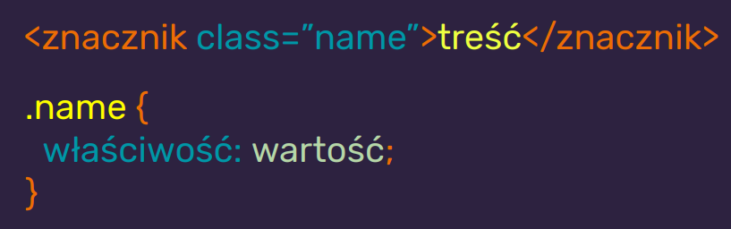

CSS = Cascading Style Sheets
CSS odpowiadaj za prezentacj
| JAVASCRIPT |
| CSS |
| HTML |
| Tre |
CSS wpywaj na wygld element贸w HTML i treci na ekranie, wydrukach itp.
Skadnia CSS to reguy

Budowa reguły CSS
<style>
W nim wpisujemy
reguły

Podpięcie zewnętrznego pliku CSS do HTML
.(kropka) - znacznik klasy

#(hash) - znacznik identyfikatora
!important
Nadpisuje
wszystkie selektory i jest niezmienny

Specyficzność selektorów w CSS
Jeli specyficzno jest r贸wna - pierwszestwo ma selektor "bliżej" elementu
Nazewnictwo klas
- Używaj pojedynczych s贸w z j. angielskiego
- Nazywaj rzeczy zgodnie z ich funkcj na stronie
- Wtartuj z maej litery np. header nie Header
- Nie zaczynaj od cyfry
- Jeli musisz uży dw贸ch s贸w użyj tzw. kebab case np. news-listing
- Staraj si, żeby element mia jedn klas (nie zwikszaj specyficznoci bez potrzeby)